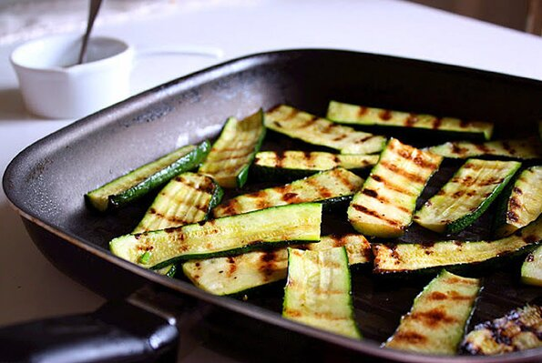

Easy Zucchini

I didn't grow up cooking, but have a love for Italian and Mediterranean rooted foods. I'm always on the go and love easy recipes so when I found this one on allrecipes, I was like yay! highfive!
Prep: 10 minutes, Cook: 8 minutes, Servings: 2, Total time: 18 minutes
Ingredients
- 2 medium zucchini, sliced lengthwise
- 4 tablespoons extra-virgin olive oil
- 2 tablespoons white wine vinegar
- 2 tablespoons chopped fresh parsley
- 2 cloves garlic, minced
- salt and freshly ground black pepper to taste
Steps
- Season zucchini with salt and pepper and brush lightly with olive oil.
- Heat a grill pan over medium-high heat. Place zucchini slices, a few at a time, into hot pan and cook until the pattern of the pan is imprinted into zucchini, about 4 minutes. Turn and cook an additional 3 to 4 minutes.
- Combine olive oil, vinegar, parsley, garlic, salt, and pepper in a small bowl. Brush cooked zucchini with olive oil mixture and serve.